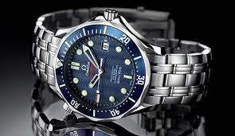

OMEGA
Omega es un fabricante de relojes de lujo con base en Biel/Bienne, Suiza, perteneciente al Grupo Swatch.
Dada su veteranía, su popularidad, el haber sido el reloj empleado por astronautas en la Luna,
su larga relación con el cronometraje deportivo y el ser patrocinador de los Juegos Olímpicos.
